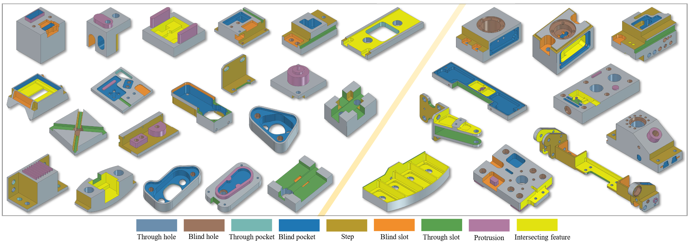
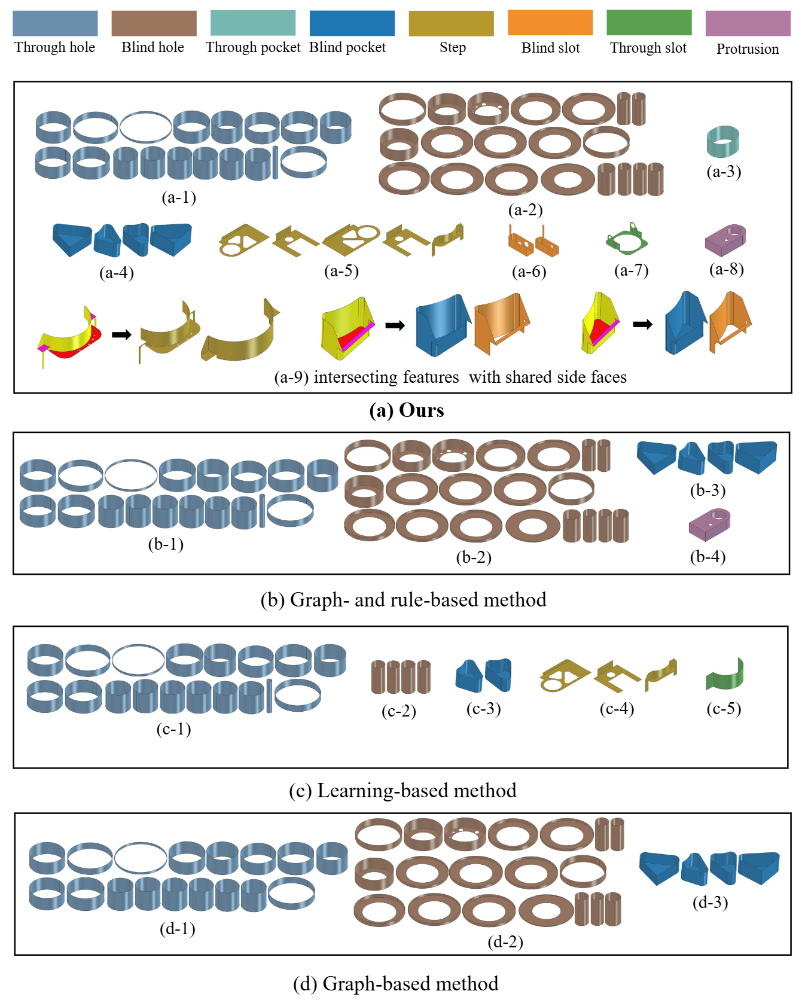
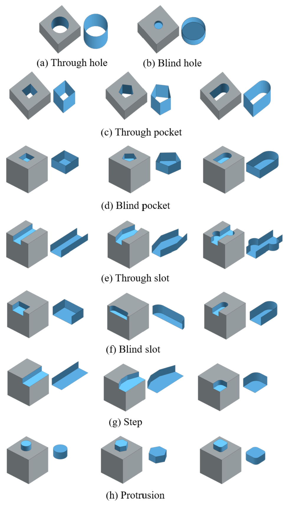
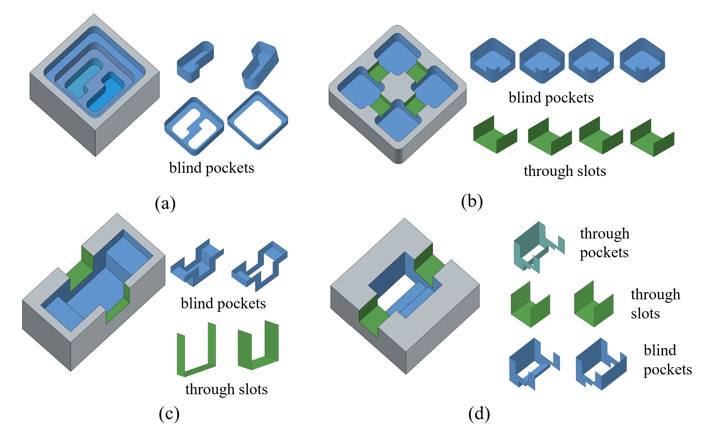
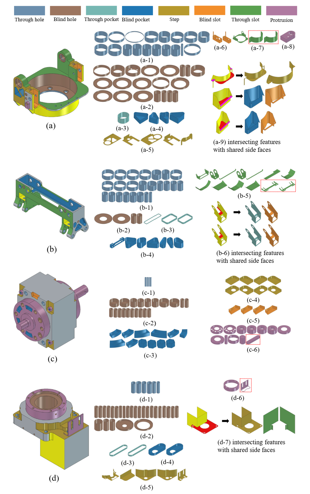
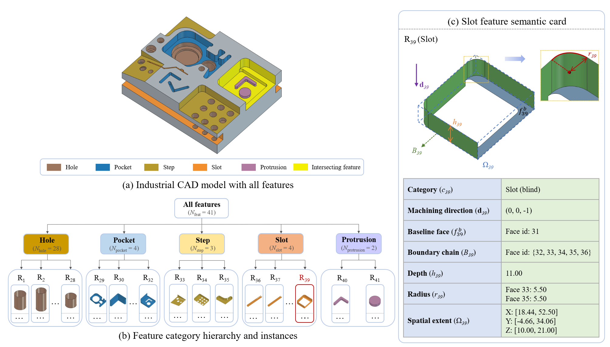

In CAD–CAPP–CAM integrated manufacturing, converting STEP models of milling parts into process-planning knowledge is essential but remains challenging. The difficulty arises from both the absence of explicit manufacturing semantics in B-Rep representations and the geometric complexity of milling parts, where slots, pockets and steps may interact, share side faces, disturb concave–convex adjacency, and form irregular boundary profiles. Existing graph- and rule-based methods usually describe manufacturing features using predefined templates or local topological patterns, making them fragile when adjacency attributes are ambiguous or feature regions overlap. This paper proposes a geometry–topology hybrid framework for manufacturing feature recognition and parametric semantics extraction from STEP milling models. The core idea is to infer milling features as machining-oriented regions through the joint reasoning of local geometric variation, topological continuity, and baseline-face spatial constraints. Specifically, local geometric transformations are employed to robustly characterize concave–convex adjacency relationships. Baseline-face-constrained axial projection is further integrated with topological propagation to decompose interacting regions and assign shared faces. Based on the resulting topology, open-chain and closed-loop structures are used as generalized criteria for manufacturing feature classification and machining attribute extraction. Experiments on benchmark and industrial STEP models demonstrate improved recognition robustness and structured outputs for integrated process planning.
We introduce a hybrid framework which is developed to transform STEP milling models into process-planning-oriented manufacturing semantics.
In past research, automatic feature recognition has been widely studied as an important technique for connecting CAD models with downstream process planning. Graph-based methods represent boundary representation faces as nodes and encode adjacency, convexity, and concavity as graph attributes, providing an interpretable basis for machining feature recognition. Rule-based methods recognize manufacturing features according to predefined geometric and topological conditions, such as surface type, face combination, boundary loop, and machining accessibility. Learning-based methods have recently been developed to reduce dependence on handcrafted rules. However, they still face limitations in robust adjacency judgment, interacting feature decomposition, and parametric semantics extraction. These limitations motivate the proposed geometry–topology hybrid framework for STEP milling models.

In this paper, we propose a geometry–topology hybrid framework for manufacturing feature recognition and parametric semantics extraction from STEP models. The core idea is to regard a milling feature as a machining-oriented spatial region jointly constrained by local geometric variation, topological continuity, and baseline-face-related spatial accessibility, rather than as a fixed topological template. Specifically, a local geometric transformation-based method is developed to calculate adjacency attributes by comparing geometric variations before and after offset-like transformations, improving the robustness of concave–convex relationship determination. A baseline-face-constrained axial projection strategy is then introduced to decompose interacting regions and assign shared side faces by analyzing spatial intervals along machining directions. Based on the resulting topology, open-chain and closed-loop structures are used as generalized criteria for classifying regular and irregular milling features. The output includes not only feature categories, but also machining direction, base face, boundary chain, depth, radius, and spatial extent.
Recognition results on simple feature models.

Recognition results on intersecting feature models.

Recognition results on industrial STEP models.

Parameter extraction results.

If our work is helpful to you, please cite it:
{}